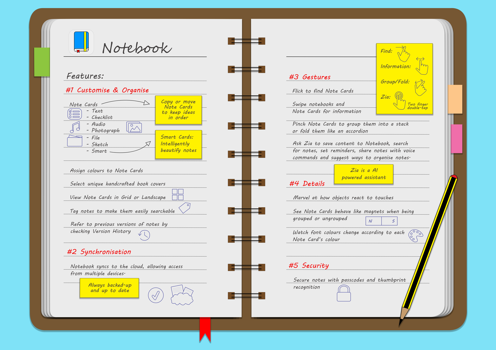
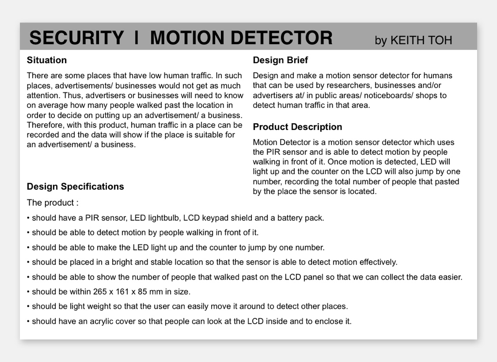
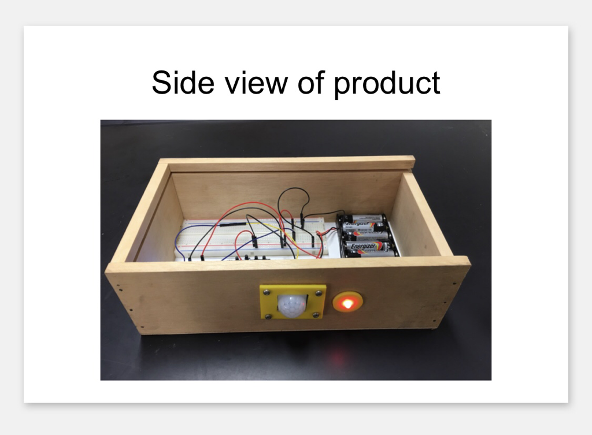
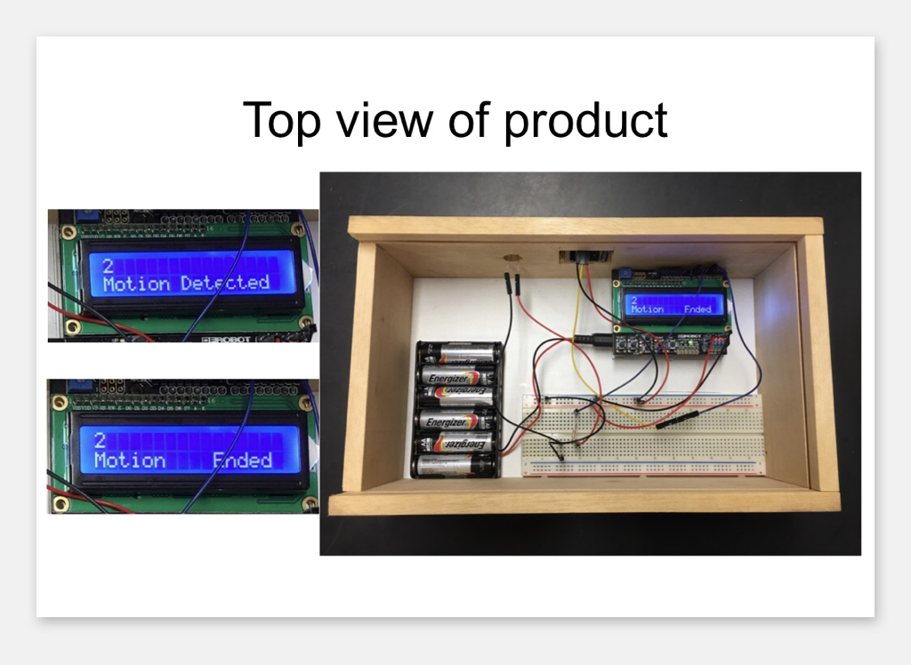

Design an Infographics Chart for a Mobile Application as part of an Assignment for Diploma in Information Technology, Year 1 Design Principles Module.
Build a Motion Detector powered by Arduino to record the number of people passing by a certain location.
  © Keith Toh 2020
Back to Top